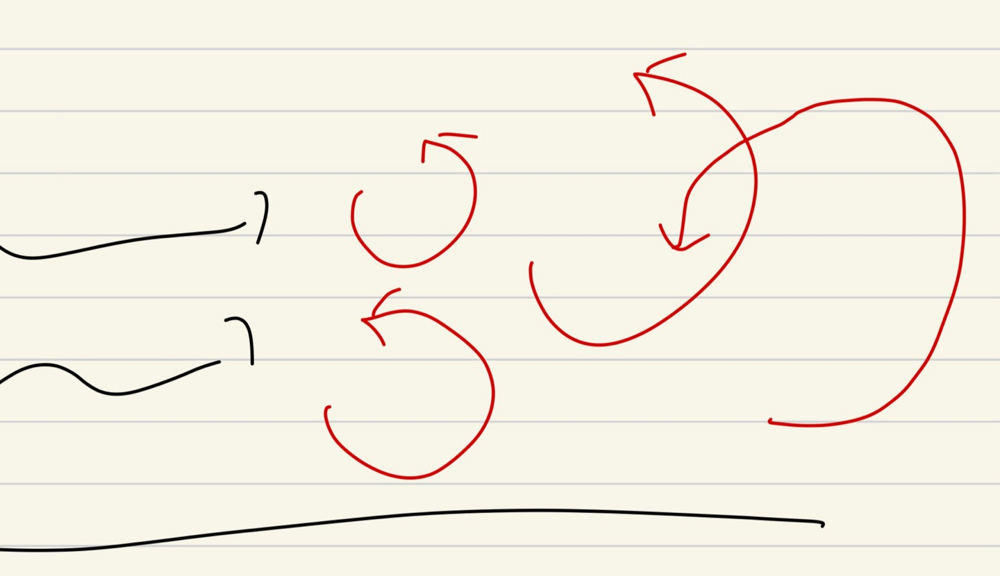
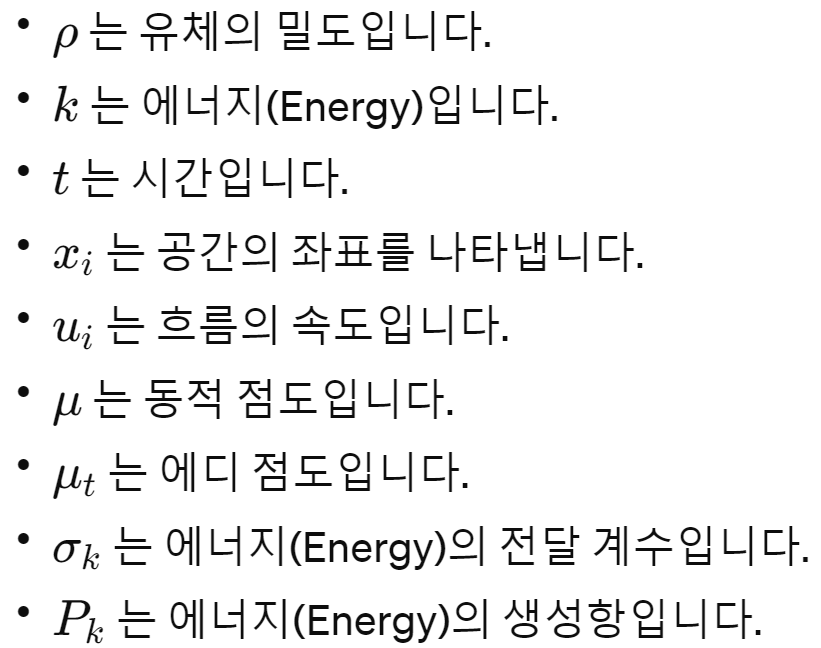
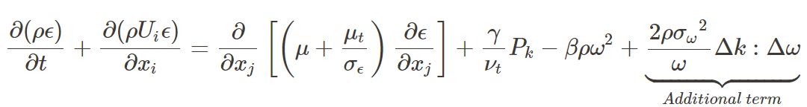
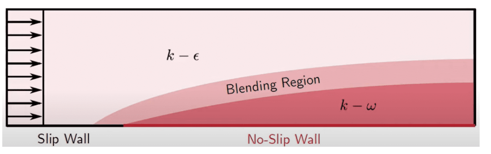
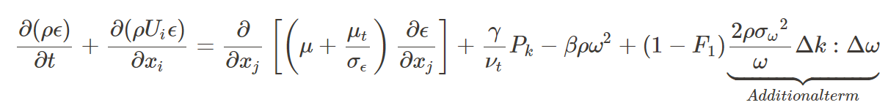

[Fluid mechanics] Ch 6. Turbulence modeling
지난 시간 벽근처에서의 Stress에 대해서 분석해 보았다.
https://jeffdissel.tistory.com/39
[Fluid mechanics] Ch 6. Law of the wall.
난류 Turbulence는 Randomness그 자체이다. 시간에 따라서 진폭이 일정하지 않는 그냥 랜덤한 파동의 형태를 띈다. 이를 분석하기 위해서, 과학자들은 시간평균의 개념을 가져온다. 그리고 Time mean veloc
jeffdissel.tistory.com
벽근처의 stress를 크게 laminar, turbulent stress로 분할 할 수있었다.
지금도 그렇고, 난류에 대해서 연구하는 사람들이 굉장히 많다.
Time average Reynolds stress를 수학적으로 표현하고 싶어서...
한번 과거에서 현대까지, Reynolds stress를 어떻게 표현 했는지 알아보는 시간을 가지자.
먼저 또란들 Prandtl 은 turbulence stress를 다음과 같이 표현했다.
![[Fluid mechanics] Ch 6. Turbulence modeling](./images/img-001.png)
어디서 많이 본 식아닌가? 그냥 Laminar stress에서 앞에 점성계수만 바꾼 거다 ㅋㅋ
근데 그럴싸하다. 그니까
turbulent stress라는 개념 자체를 생각해보면,
유체가 위아래로 요동치니까, 위아래로 Momentum exchange를 더더더더 하게 된다.
Momentum exchange가 결국 위아리 속도의 y방향 gradient라고 생각 할 수 있다.
여기서 저 앞에 점성계수같은 녀석 ut를
Eddy viscosity라고 정의한다.
저 위에 식까지는 제가 방금 말씀드린 이유로 유체역학자들이 전부 인정한다.
하지만 질문의 답은 질문을 낳는다.
Eddy viscoisy 는 어케 정의?
먼저 Eddy의 정의는
지표면위로 유체가 오른쪽으로 지나가고 있을때, 빨간색으로 회전하는 녀석들을이다.

Karman은 이 'Eddy의 사이즈가 클 수록 turbulent stress가 크다'라고 하였고
이 사이즈 = Mixing length (l) 로 정의 하였다.
각 eddy마다 지름이나, 반지름 같은 mixing length가 있다고 한것이다.
여기까지는 뭔가 술술 이해가 된다.
마지막으로 mixing length에 관한 식을 세우는 대 karman은
Mixing length = ky( k = 0.41상수, y 는 벽으로부터 떨어진 거리)
라고 정의한다.
Karman은 이렇게 생각한 것이다.
"벽으로부터 멀리 떨어져있을수록 Eddy사이즈가 크지 않을까?
반대로 생각하면 벽이랑 가까울수록 벽이 크기가 커지는데 방해하잖아."
결론적으로,
![[Fluid mechanics] Ch 6. Turbulence modeling](./images/img-003.png)
![[Fluid mechanics] Ch 6. Turbulence modeling](./images/img-004.png)
Karman은 다음과 같이 정의하였다.
이제 현대에서는 어떻게 정의했을까??
1. k-e model
시작은 바로 turbulence는 mixing length (l) 처럼 static하지 않고,
E같이 convection, diffusion, transfer이 일어난다는 것
![[Fluid mechanics] Ch 6. Turbulence modeling](./images/img-005.png)
![[Fluid mechanics] Ch 6. Turbulence modeling](./images/img-006.png)
단순하게 진짜 단순하게 이해해보자.
그니까 우리가 지금 구하고 있는 거는 turbulence stress즉,
난류의 힘이 얼마나 쎈지를 나타내는 Eddy viscosity를 구하고 있어,
그렇다면 Turblence intensity (k)랑 비례할 꺼고,
Turbulence dissipation 은 에너지 소산이니까 반비례하지 않을까?
저렇게 표현하면 좋은게 우리는 Turblence intenstiy가 에너지이니까,
Energy transport equation을 이렇게 유도 할 수 있단 말이지.
![[Fluid mechanics] Ch 6. Turbulence modeling](./images/img-007.png)

좌항 첫번째: time derivative
좌항 두번째: Convective term
우항 첫번째: Diffusino term
우항 두번째: Source term
우항 세번째: E dissipation term
그리고 같은 방법으로 epsilon(e)도 Transport Equaiton으로 나타낼 수 있어.
![[Fluid mechanics] Ch 6. Turbulence modeling](./images/img-009.png)
![[Fluid mechanics] Ch 6. Turbulence modeling](./images/img-010.png)
하지만 이렇게만 모델링 하면 한계가 있죠,
이전에 karman은 벽에서 거리가 멀수록 Mixing length가 크고,
Eddy size가 커지는 경향이 있다고 했습니다.
이것을 위 k-e model에서는 반영이 안된거에요.
그 단점을 보완한 방법이 바로 k-e sst
2. k-e SST
Damping function Fu 를 eddy viscosity 식 앞에 장착 시킨다.
그리고 벽근처로 갈 수록, 함수값 F가 작아져 eddy viscosity가 작감소하게 F를 설계한다.
![[Fluid mechanics] Ch 6. Turbulence modeling](./images/img-011.jpg)
2. k-w model
여기서 Specific turbulent dissipation rate(w)를 정의한다.
![[Fluid mechanics] Ch 6. Turbulence modeling](./images/img-012.png)
정의한 이유는 바로, k-e보완을 위해서.
k-e의 damping function 자체가
flate plate에서 유도된 것. 이기 때문에,
Adverse gradient, flow separation에서 inaccurate하다.
w는 그 자체가
Damping function을 포함하고 있어,
위 같은 상황에서 more accurate
k-w model의 경우,
Dissipaiton rate transport equation은:

3. k-w SST model
그럼에도 k-w standard model도 단점이 존재한다.
바로, free stream condition에 영향을 너무 많이 받는것,
freestream k값이 조금만 변해도, flow spearation 의 위치가 심하게
변하는 현상이 발생한다.
따라서, 이를 보완하기 위해서,
k-e + k-w model을 섞는 Blending function을 추가한다.

이렇게 Free stream 에서는 k-e, wall boundary에서는 k-w model을 사용해준다.
Transport equation도 위치에 따라서, 맞게 써주어야 하기 때문에 이렇게
(1-F1)을 additional term에 붙혀준다.

즉 k-w model -> F1 = 0
k-e model -> F1 = 1
Blending region -> 0< F1 < 1